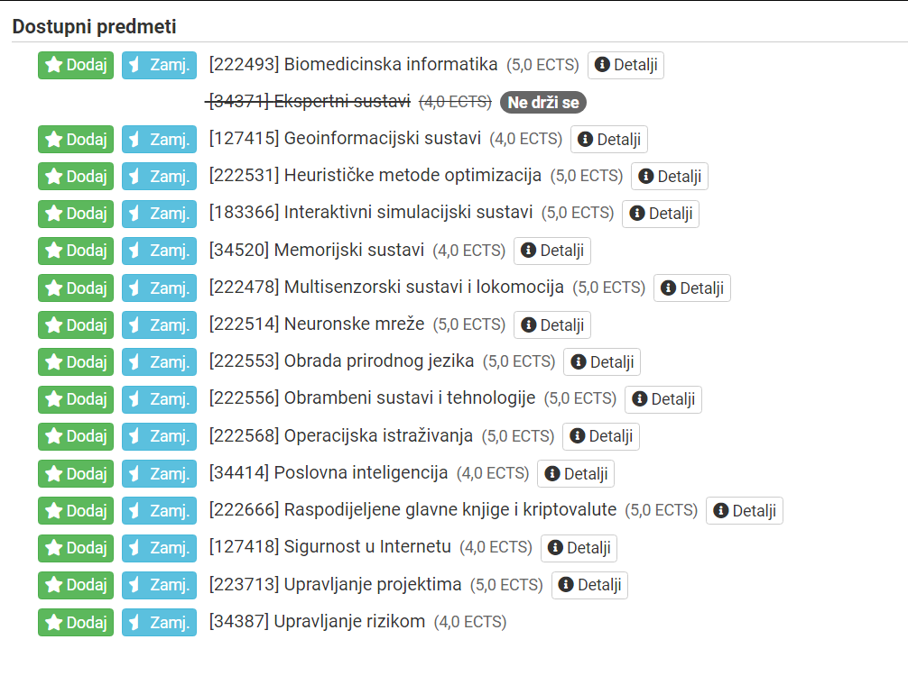

Tražim RZ 5. godina EZ PACK što se tiče izbornih predmeta, pročešljao sam ovu i još par tema i po svemu pročitanom sudeći to bi bilo:
- Upravljanje rizikom
- Obrambeni sustavi
- Geinformacijski sustavi
Sva dodatna mišljenja o navedenim predmetima, ili ponuđenima u tablici ispod su dobrodošla
